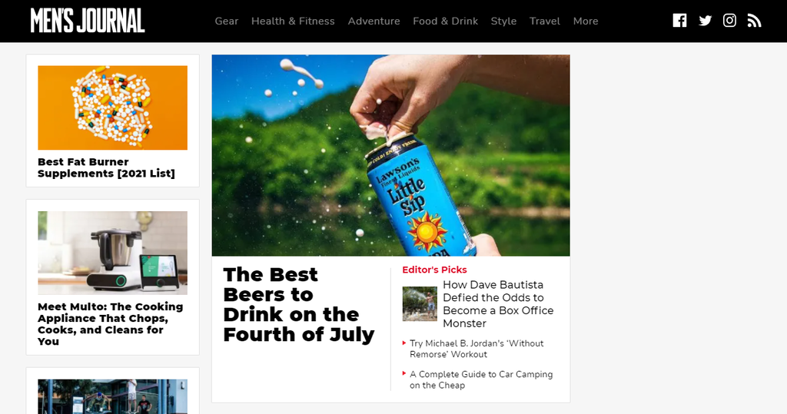
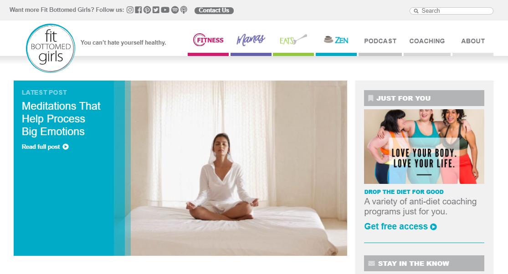
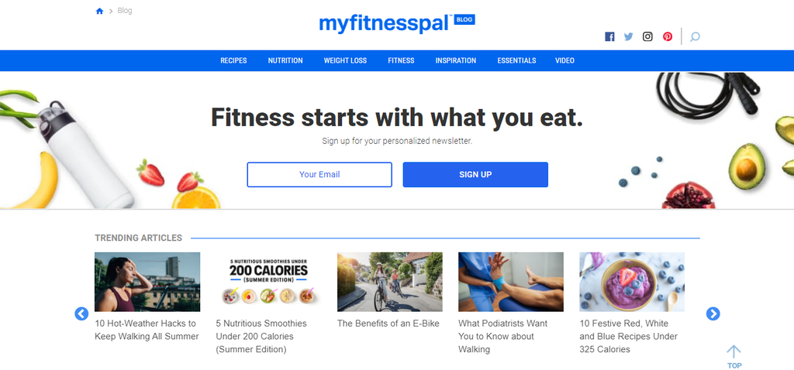

Title: Men’s Journal
Date: [19-MARCH-2024]
Main topics: men, health, style, adventure, gear Created on: vishnu The Men’s Journal website is the online version of the American magazine of the same name. The lifestyle blog targeted towards men features various topics such as health and fitness, male grooming and style, outdoor recreation and travel, as well as cars and consumer electronics. What Can We Learn From This Blog The website has a very organized navigation bar. For example, if a site visitor hovers over Gear on the navigation bar, various categories – such as Autos, Tech, and Fitness – will appear, complete with corresponding pictures. Visitors can even click on the arrow on either side of the categories to check out more categories.
Title: Fit Bottomed Girls
Date: [14-March-2024]
Main topics: women’s fitness, wellness, motherhood, nutrition Created on: vishnu With posts on positive affirmations and workout routines, Fit Bottomed Girls is a blog helping women maintain their health both mentally and physically. Run by two certified fitness professionals, the blog also advocates body positivity, driven by the belief that healthy bodies come in various shapes and sizes. What Can We Learn From This Blog The blog’s content is divided into four main categories: Fitness, Mamas, Eats, and Zen. Each category has a specific color label: magenta for Fitness, purple for Mamas, green for Eats, and blue for Zen. This neat color-coded system is a great example of how to improve user experience. It provides a quick and easy way to find a specific category of content just by looking for a particular color.
Title: MyFitnessPal Blog
Date: [25-April-2024]]
Main topics: nutrition, weight loss, fitness Created on: vishnu The creators of the MyFitnessPal app that tracks one’s nutrition and fitness goals also run the MyFitnessPal blog. The website content includes healthy food recipes, weight loss tips, and workout guides. In addition, the blog features inspirational success stories of people who have managed to become healthier after losing weight or overcoming a nutrition-related illness. What Can We Learn From This Blog Upon accessing the website, visitors will immediately see the banner inviting them to sign up for the MyFitnessPal newsletter. This is an excellent method to help build your readers’ mailing list. The blog’s homepage also uses a slider featuring their trending articles, displayed in article headlines and their accompanying pictures.